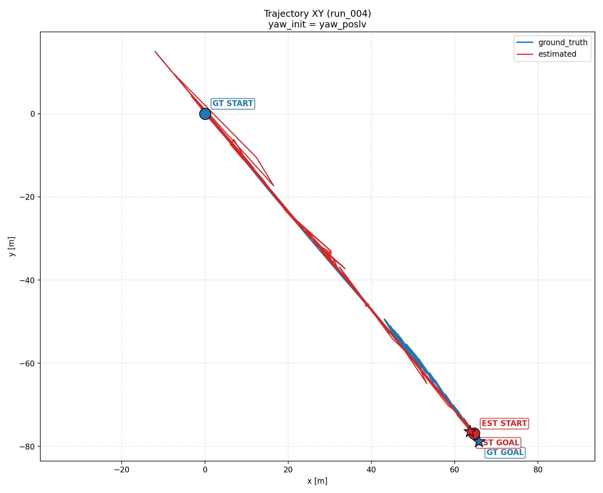
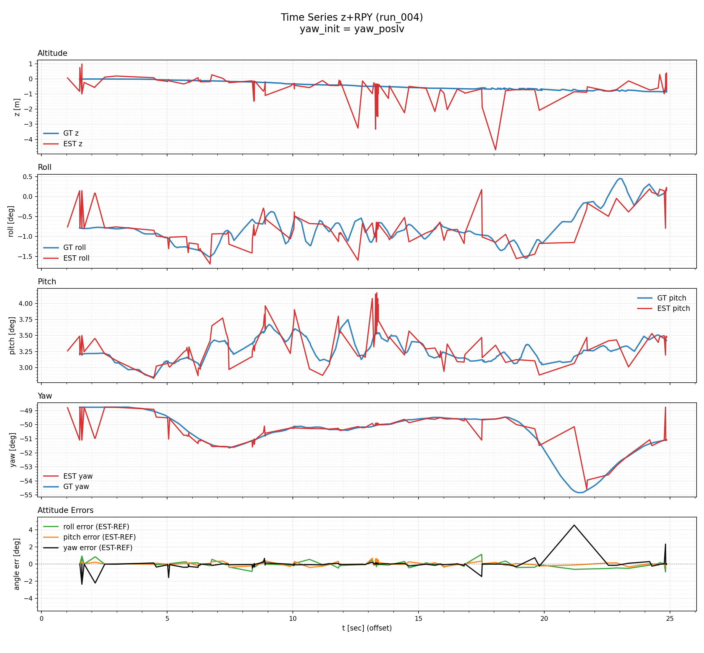

bag_path: /media/autoware/aa/ai_coding_ws/kf_ros2_ws/data/istanbul/all-sensors-bag3_compressed
param_grid_json: /tmp/kfl_istanbul_bag3_focus3/param_grid_focus3.json
summary_csv: summary.csv
ranking_csv: ranking_by_rmse_3d.csv
ranking_nobias_csv: ranking_by_rmse_3d_nobias.csv
Legend: left panel = best by rmse_3d_m (absolute RMSE, bias included), right panel = best by rmse_3d_nobias_m (bias removed before RMSE).
run_0047.6875054224075896.3718979006834595062.0gt_quat0.231211028153278040.2971967869006572yaw_init = yaw_poslv-48.748667{'gravity_mps2': 0.0, 'use_imu_orientation': True, 'use_imu_orientation_covariance': True, 'var_imu_orientation_rpy': 0.0015, 'var_imu_w': 0.01, 'var_imu_acc': 0.01, 'var_gnss_xy': 0.05, 'var_gnss_z': 0.1, 'max_imu_dt_sec': 1.0}

run_0047.6875054224075896.3718979006834595062.0gt_quat0.231211028153278040.2971967869006572yaw_init = yaw_poslv-48.748667{'gravity_mps2': 0.0, 'use_imu_orientation': True, 'use_imu_orientation_covariance': True, 'var_imu_orientation_rpy': 0.0015, 'var_imu_w': 0.01, 'var_imu_acc': 0.01, 'var_gnss_xy': 0.05, 'var_gnss_z': 0.1, 'max_imu_dt_sec': 1.0}| rank | run_id | rmse_3d_m | rmse_3d_nobias_m | matched | yaw_rmse_deg |
|---|---|---|---|---|---|
| 1 | run_004 | 7.687505422407589 | 6.371897900683459 | 5062.0 | 0.23121102815327804 |
| 2 | run_001 | 15.86554963575036 | 15.161383632159382 | 3439.0 | 0.3524460820700978 |
| 3 | run_005 | 19.392004745224988 | 15.348838128782916 | 4070.0 | 0.8875272279445731 |
| 4 | run_006 | 20.164735378492193 | 20.164503537407406 | 4577.0 | 0.22523963372486835 |
| 5 | run_008 | 28.364292027617317 | 22.099845233535184 | 3591.0 | 0.2311668741409818 |
| 6 | run_003 | 37.94019249880769 | 34.75358047962232 | 4358.0 | 0.8682702534163292 |
| 7 | run_007 | 218.02317928339153 | 176.14247296982126 | 5398.0 | 0.2787968948803578 |
| 8 | run_002 | 265.37896075050935 | 205.988509247933 | 6404.0 | 0.17926513748380243 |
| rank | run_id | rmse_3d_m | rmse_3d_nobias_m | matched | yaw_rmse_deg |
|---|---|---|---|---|---|
| 1 | run_004 | 7.687505422407589 | 6.371897900683459 | 5062.0 | 0.23121102815327804 |
| 2 | run_001 | 15.86554963575036 | 15.161383632159382 | 3439.0 | 0.3524460820700978 |
| 3 | run_005 | 19.392004745224988 | 15.348838128782916 | 4070.0 | 0.8875272279445731 |
| 4 | run_006 | 20.164735378492193 | 20.164503537407406 | 4577.0 | 0.22523963372486835 |
| 5 | run_008 | 28.364292027617317 | 22.099845233535184 | 3591.0 | 0.2311668741409818 |
| 6 | run_003 | 37.94019249880769 | 34.75358047962232 | 4358.0 | 0.8682702534163292 |
| 7 | run_007 | 218.02317928339153 | 176.14247296982126 | 5398.0 | 0.2787968948803578 |
| 8 | run_002 | 265.37896075050935 | 205.988509247933 | 6404.0 | 0.17926513748380243 |